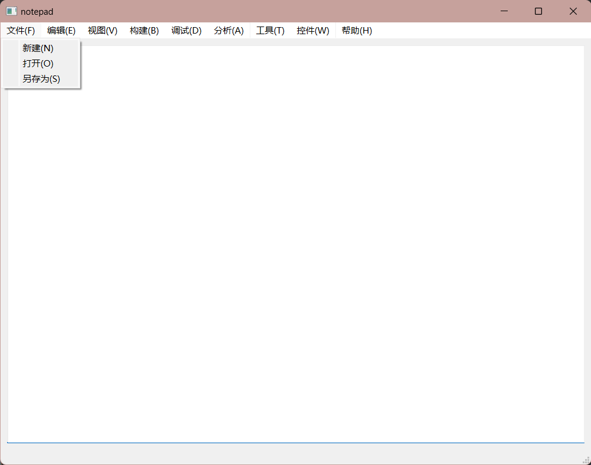

[5] MainWindow和文件操作¶
1. MainWindow¶
MainWindow 是一个 Qt 应用程序的主窗口类，通常是应用程序的入口点，它包含了应用程序的主要用户界面（UI）元素和逻辑。
以下是 MainWindow 类的一些关键信息：
-
构造函数和析构函数：
-
MainWindow 类有一个构造函数MainWindow::MainWindow(QWidget *parent) 和一个析构函数MainWindow::~MainWindow()。构造函数用于初始化主窗口的各个组件和连接信号与槽，而析构函数用于释放资源。 -
用户界面初始化：
-
构造函数中通过
ui(new Ui::MainWindow) 创建了一个Ui::MainWindow 对象，这个对象用于初始化用户界面的组件。 -
信号与槽连接：
-
在构造函数中，通过
connect 函数连接了主窗口的动作（Action）与槽函数。这些连接将在用户与应用程序的交互中触发。 -
槽函数：
-
newActounSlot、openActounSlot 和saveActounSlot 是槽函数，它们会在用户触发相应的动作时执行。例如，newActounSlot 在用户点击 "新建" 菜单项时被调用，用于清空文本编辑器的内容。 -
用户界面管理：
-
主窗口类通过
ui-> 前缀访问用户界面中的各个组件，例如ui->newAction、ui->openAction 和ui->saveAction。这些组件是在 Qt 的设计器中设计并生成的。 -
文件操作：
-
主窗口类包含了打开和保存文件的逻辑。当用户选择 "打开" 时，它会打开文件对话框，读取所选文件的内容并在文本编辑器中显示。当用户选择 "保存" 时，它会将文本编辑器的内容保存到所选文件中。
-
MainWindow 类是一个主要用于管理用户界面和处理用户交互的类。它充当了整个应用程序的主要窗口，包括菜单、文本编辑器和文件操作等功能。通过信号与槽机制，它可以响应用户的操作并执行相应的操作。这个类是构建 Qt 桌面应用程序的重要组成部分。
2. 文件操作¶
与文件操作相关，就不得不提QFile类了，其实和其他文件IO操作类似。
2.1 QFile类¶
QFile 类是 Qt 中用于文件操作的核心类，提供了丰富的方法和功能。下面详细介绍 QFile 类的主要方法和用法：
1. 打开文件
-
bool open(QIODevice::OpenMode mode): 打开文件，使用指定的打开模式mode。常用的模式包括： -
QIODevice::ReadOnly: 只读模式，只能读取文件内容。 -
QIODevice::WriteOnly: 只写模式，只能写入文件内容，如果文件已存在会被清空。 -
QIODevice::Append: 追加模式，只能在文件末尾追加内容。 -
QIODevice::Text: 以文本模式打开文件，支持文本文件读写。 -
QIODevice::Binary: 以二进制模式打开文件，支持二进制文件读写。 -
void close(): 关闭文件。
QFile file("example.txt");
if (file.open(QIODevice::ReadOnly | QIODevice::Text)) {
// 文件已成功打开，可以进行读操作
} else {
// 文件打开失败，处理错误
}
2. 读取文件内容
-
QByteArray read(qint64 maxSize): 从文件中读取最多maxSize 字节的数据，并返回读取的数据，存储在一个字节数组（QByteArray）。如果maxSize 为 -1，表示读取整个文件。 -
QByteArray readAll(): 读取整个文件的内容并返回，存储在一个字节数组（QByteArray）。 -
qint64 readLine(char *data, qint64 maxSize): 从文件中读取一行数据，存储到data 中，最多读取maxSize 字节，返回实际读取的字节数。
QFile file("example.txt");
if (file.open(QIODevice::ReadOnly | QIODevice::Text)) {
QByteArray data = file.readAll();
// 处理读取的数据
qDebug() << data;
file.close();
}
3. 写入文件内容
-
qint64 write(const QByteArray &data): 将字节数组data 写入文件，并返回写入的字节数。 -
qint64 write(const char *data, qint64 maxSize): 将最多maxSize 字节的数据从字符数组data 写入文件，并返回写入的字节数。
QFile file("output.txt");
if (file.open(QIODevice::WriteOnly | QIODevice::Text)) {
QByteArray data = "Hello, QFile!";
qint64 bytesWritten = file.write(data);
// 处理写入结果
qDebug() << "Bytes written:" << bytesWritten;
file.close();
}
4. 文件操作
-
bool remove(): 删除文件。 -
bool rename(const QString &newName): 重命名文件。 -
bool resize(qint64 newSize): 调整文件的大小。 -
bool copy(const QString &newName): 复制文件。
5. 文件信息
-
bool exists(): 检查文件是否存在。 -
qint64 size(): 返回文件的大小（字节数）。 -
QString fileName(): 返回文件的路径和名称。 -
QString filePath(): 返回文件的路径。
QFile file("example.txt");
if (file.exists()) {
qDebug() << "File size:" << file.size() << "bytes";
qDebug() << "File path:" << file.filePath();
}
6. 错误处理
-
QFileDevice::FileError error(): 返回文件的错误状态。 -
QString errorString(): 返回包含错误信息的字符串。
QFile file("example.txt");
if (!file.open(QIODevice::ReadOnly | QIODevice::Text)) {
qDebug() << "Error:" << file.errorString();
}
以上是 QFile 类的一些常用方法和用法，你可以根据需要选择合适的方法来进行文件操作。在使用 QFile 时，务必检查每个操作的返回值，以便进行错误处理。
¶
2.2 通过QFileDialog类的方法操作任意文件¶
1.关于QFileDialog类
QFileDialog 类是Qt库中用于创建文件对话框的类。它允许你的应用程序与用户交互以获取文件路径或文件名，并用于打开、保存和选择文件的操作。QFileDialog 类提供了一个用户友好的界面，使用户可以浏览文件系统以选择文件或指定文件保存的位置。
以下是一些常见的 QFileDialog 的静态函数，它们用于打开不同类型的文件对话框：
-
getOpenFileName：用于打开文件对话框以获取一个文件的路径。 -
getOpenFileNames：用于打开文件对话框以获取多个文件的路径。 -
getSaveFileName：用于打开保存文件对话框以获取保存文件的路径和文件名。 -
getExistingDirectory：用于打开选择文件夹对话框以获取文件夹的路径。 -
getExistingDirectoryUrl：类似于上一个函数，但返回QUrl 对象。
2.举个例子
这两段代码是使用Qt中的QFileDialog类来创建文件对话框，以便用户可以选择文件或保存文件。这些代码用于打开文件对话框以获取文件名或保存文件对话框以获取保存文件的路径。
- 打开文件对话框:
QString filename = QFileDialog::getOpenFileName(this, "选择文件",
QCoreApplication::applicationFilePath(), "*.cpp");
这段代码用于打开一个文件对话框，用户可以在其中选择一个文件。它的参数解释如下：
-
this：通常表示当前窗口或对话框的父对象，这将使文件对话框与父窗口相关联。 -
"选择文件"：对话框的标题，显示在对话框的标题栏上。 -
QCoreApplication::applicationFilePath()：这个函数返回当前应用程序的可执行文件的路径，通常用于设置文件对话框的默认目录。 -
"*.cpp"：这是文件过滤器，用于指定用户可以选择的文件类型。在这种情况下，它限制了用户只能选择扩展名为.cpp的文件。你可以根据需要更改文件过滤器。 -
保存文件对话框:
QString filename = QFileDialog::getSaveFileName(this, "请选择路径",
QCoreApplication::applicationFilePath());
这段代码用于打开一个保存文件对话框，用户可以在其中选择保存文件的路径和文件名。它的参数解释如下：
-
this：同样表示当前窗口或对话框的父对象，以关联对话框。 -
"请选择路径"：保存文件对话框的标题，显示在对话框的标题栏上。 -
QCoreApplication::applicationFilePath()：同样用于设置保存文件对话框的默认目录，通常将其设置为应用程序的可执行文件路径。
在使用这两个对话框后，filename 变量将包含用户选择的文件名（对于打开文件对话框）或用户指定的保存路径和文件名（对于保存文件对话框）。你可以进一步使用这些文件名来进行文件操作或其他处理。
请注意，上述示例中的代码假设你正在使用一个 Qt 应用程序，并且已经包含了必要的头文件和使用了 Qt 的功能。
3. 综合例子¶
一个记事本

#include "mainwindow.h"
#include "ui_mainwindow.h"
MainWindow::MainWindow(QWidget *parent)
: QMainWindow(parent)
, ui(new Ui::MainWindow)
{
ui->setupUi(this);
this->setWindowTitle("notepad");
connect(ui->newActoin,&QAction::triggered,this,&MainWindow::newActounSlot);
connect(ui->openAction,&QAction::triggered,this,&MainWindow::openActounSlot);
connect(ui->saveAction,&QAction::triggered,this,&MainWindow::saveActounSlot);
}
MainWindow::~MainWindow()
{
delete ui;
}
void MainWindow::newActounSlot()
{
ui->textEdit->clear();
this->setWindowTitle("新建文本文档.txt");
}
void MainWindow::openActounSlot()
{
//打开文件管理器 ->参数：当前窗口，打开窗口标题，打开的路径，显示的文件类型
QString filename = QFileDialog::getOpenFileName(this, "选择文件",
QCoreApplication::applicationFilePath(),//获取当前路径
"*.cpp");
//如果为空代表没选择文件，警告
if(filename.isEmpty())
{
QMessageBox::warning(this,"警告","请选择一个文件");
}
else
{
//qDebug() << filename;
QFile file(filename); //创建文件对象时，传文件路径参数构造文件
file.open(QIODevice::ReadOnly); //打开并设置打开方式
QByteArray ba = file.readAll(); //读取文件内容到一个QByteArray对象，文件内容少的时候可用file.readAll()
ui->textEdit->setText(QString(ba)); //显示文件内容到textEdit
file.close(); //关闭文件
}
}
void MainWindow::saveActounSlot()
{
QString filename = QFileDialog::getSaveFileName(this,"请选择路径",
QCoreApplication::applicationFilePath());
//如果为空代表没选择文件，警告
if(filename.isEmpty())
{
QMessageBox::warning(this,"警告","请选择一个文件");
}
else
{
QFile file(filename);
file.open(QIODevice::WriteOnly);
QString Str = ui->textEdit->toPlainText();
QByteArray ba = Str.toUtf8();
file.write(ba);
file.close();
}
}